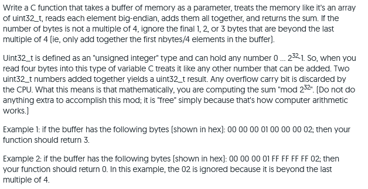
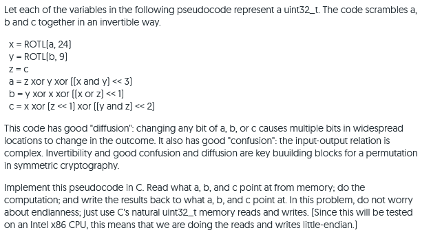
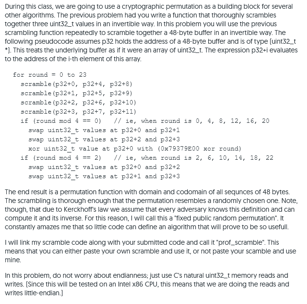

In the reading, I give you C code for reading a uint32_t little endian.
Modify it so that you have code that reads a uint32_t big endian.
Question 1 Start
Question 1 End
In the reading, I give you C code for reading a uint32_t little endian.
Modify it so that you have Java code that does the equivalent thing.
Note that in Java, byte and int are guaranteed to be 8 and 32 bits, so
there is no need to use alternative names like uint8_t and uint32_t.
Question 2 Start
Question 2 End

Question 1 Start
Question 1 End

Question 1 Start
Question 1 End

Question 1 Start
Question 1 End